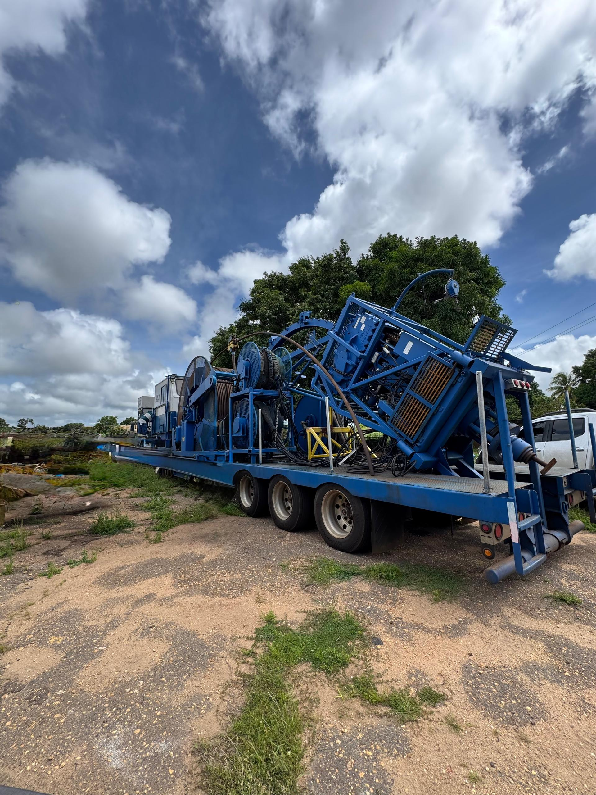
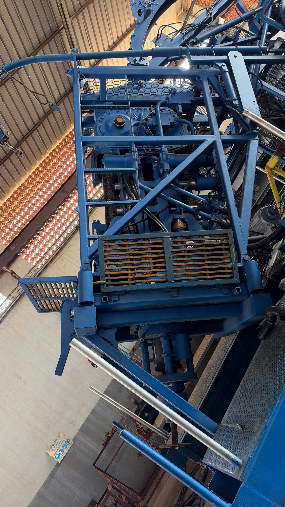
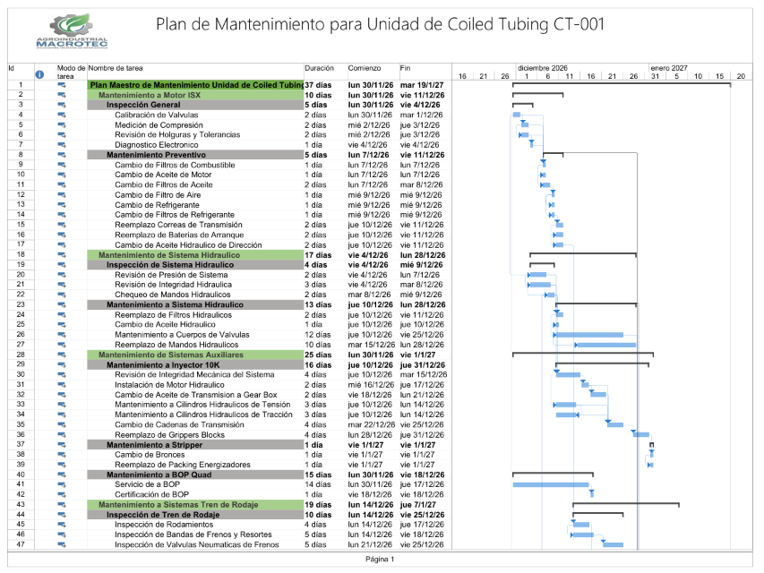
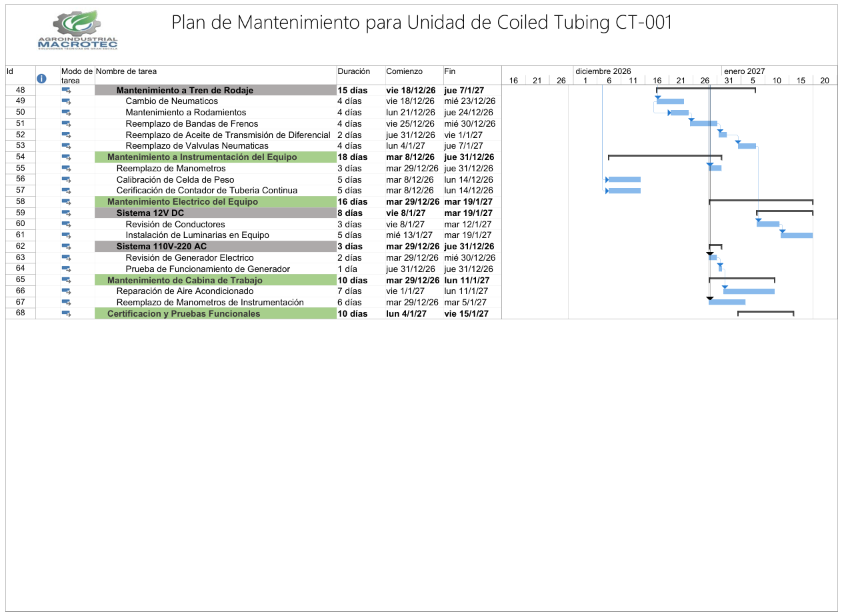
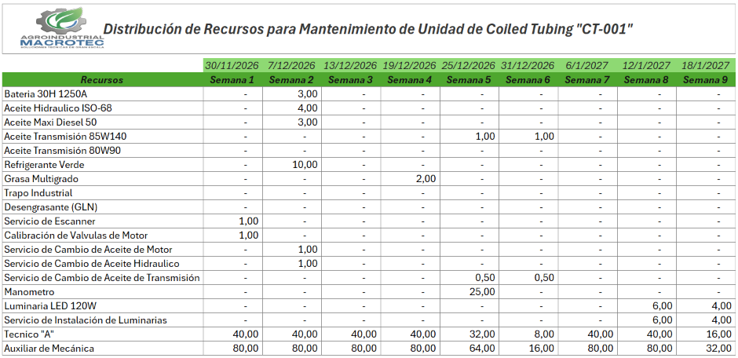
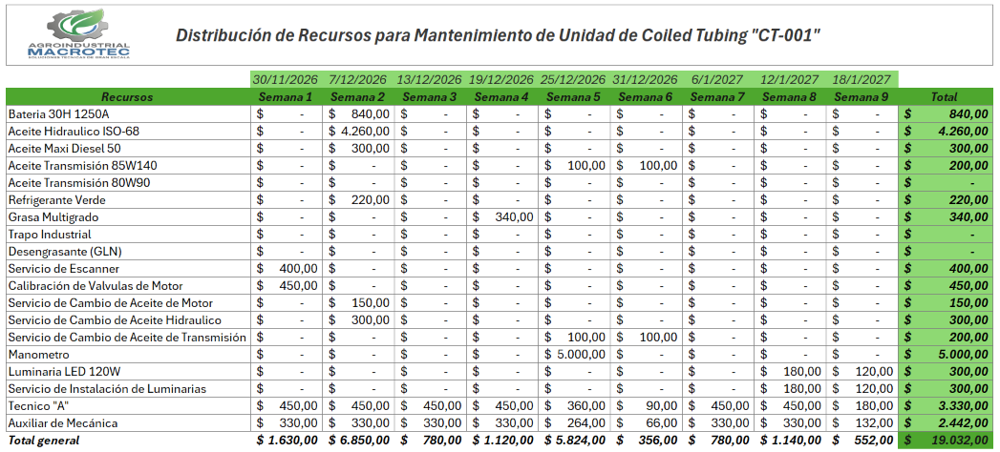
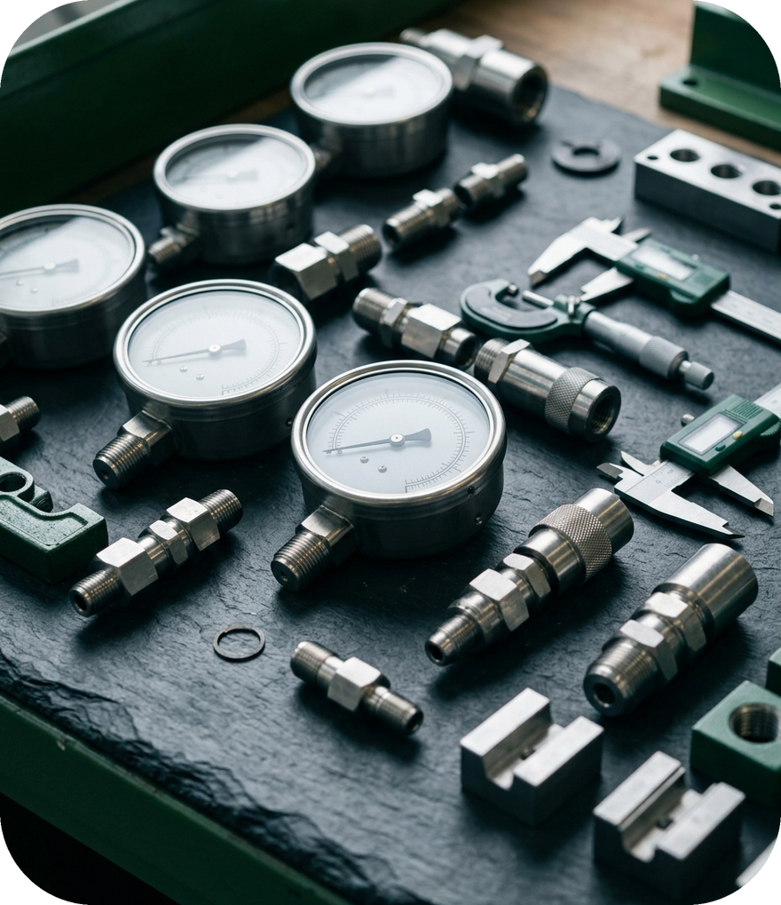

Título de la Evidencia
Descripción técnica detallada del trabajo realizado.
EVIDENCIA 1 DE 7

Ingeniería de confiabilidad y restauración técnica ejecutada por Agroindustrial Macrotec C.A. Intervención integral y diagnóstico avanzado sobre 8 sistemas críticos: grupo de potencia diésel Cummins ISX, tren de rodaje, circuitos hidráulicos y consola de mandos, sistemas de presión 10K y certificación operativa bajo estándares de pozo.
Estrategia modular estructurada para maximizar la confiabilidad en locación, minimizar tiempos fuera de servicio y asegurar la certificación integral de los componentes de superficie y pozo.
El proyecto CT-001 comprende la inspección exhaustiva, reacondicionamiento mecánico, reemplazo de fluidos de alta pureza y certificación de la unidad pesada de Coiled Tubing. Desde la planta motriz diésel hasta los componentes de control de presión de pozo (Well Control), cada componente es sometido a estrictos protocolos de control de calidad.
El plan de trabajo distribuye 888 horas-hombre entre especialistas de nivel Técnico A y auxiliares de mecánica industrial, con una concentración estratégica de suministros críticos para evitar cuellos de botella en la ruta crítica del cronograma.

Solapamiento controlado para cumplimiento de la ventana técnica de 9 semanas
Desglose técnico de las 68 tareas especializadas ejecutadas en los sistemas clave del equipo CT-001.
Calibración de válvulas e inyectores, prueba de compresión de cilindros, diagnóstico por escáner de la ECM, sustitución integral de filtros de combustible/aceite y reemplazo del banco de baterías de arranque.
Vaciado y recarga de aceite hidráulico grado industrial ISO-68, desmontaje y prueba hidrostática de bancos de válvulas (12 días), acondicionamiento de mandos proporcionales de cabina y verificación de mangueras de alta presión.
Inspección no destructiva y acondicionamiento del inyector de 10,000 PSI, mantenimiento mayor al Stripper y certificación formal de hermeticidad y torque del preventor de reventones BOP Quad.
Calibración y prueba en cero de celda de carga de peso sobre la tubería, contador electrónico de profundidad, e instalación/calibración de 25 manómetros nuevos para registro de presiones operativas.
Sustitución de rodamientos de masa, reconstrucción de bandas de freno de aire, revisión del diferencial de tracción, válvulas neumáticas de seguridad y montaje de neumáticos de alta resistencia para traslado intercampo.
Servicio al generador auxiliar para alimentación 110V/220V AC, reemplazo de arneses y conductores expuestos a hidrocarburos en 12V DC, y colocación de 10 reflectores LED de alta eficiencia para operaciones nocturnas continuas.
Revisión integral del sistema de climatización A/A de alto rendimiento, reacondicionamiento de joysticks y palancas hidráulicas, consola de instrumentación interna e iluminación de lectura técnica para el operador.
Ciclo de pruebas estáticas e hidrostáticas a plena carga en patio de talleres, simulación de tensiones, validación de paradas de emergencia (ESD) y entrega de carpeta técnica final al cliente para salida a pozo.
Inspeccione de manera interactiva las fotografías de los componentes, diagramas de control Gantt y registros presupuestarios de la unidad CT-001.
Chasis montado en semirremolque industrial, torre y componentes de accionamiento de tubería continua.
Inspección de guías, motores hidráulicos de giro y mecanismos de accionamiento de arrastre.

Inspección de compresión, bombas acopladas, radiadores industriales y filtros de succión.

Acondicionamiento de 12 días de revisión en bancos seccionales y sustitución de fluidos ISO-68.

Secuencia de tareas mecánicas y puntos de control de calidad para las primeras 5 semanas.

Fase final de certificación, ajuste de instrumentos y protocolo de entrega formal.

Matriz transparente con horas técnicas, repuestos críticos y control semanal de flujo de caja.
Descripción técnica detallada del trabajo realizado.
Somos un aliado estratégico y contratista de ingeniería especializada con sede en El Tigre, Estado Anzoátegui, Venezuela. Con amplia experiencia en la Faja Petrolífera del Orinoco y campos tradicionales, brindamos soluciones de alto nivel para la industria petrolera, petroquímica e industrial pesada.
Nuestro equipo multidisciplinario combina técnicos certificados en planta motriz diésel pesada, ingenieros hidráulicos y especialistas en sistemas de instrumentación para garantizar que cada equipo opere con máxima seguridad, continuidad de servicio y cumplimiento normativo.
Reconstrucción certificada de motores pesados Cummins, Caterpillar, Detroit Diésel y MTU.
Escaneo de módulos ECM, calibración de parámetros operativos y resolución de fallas complejas.
Bancos de válvulas seccionales, motores hidráulicos de pistones, cilindros y filtración de ultra pureza.
Fabricación de piezas especiales, recuperación de ejes, bridas de alta presión y estructuras para taladros.
Póngase en contacto inmediato con nuestra gerencia de operaciones para coordinar levantamientos técnicos, planes de mantenimiento correctivo/preventivo o certificación de unidades en taller o campo.